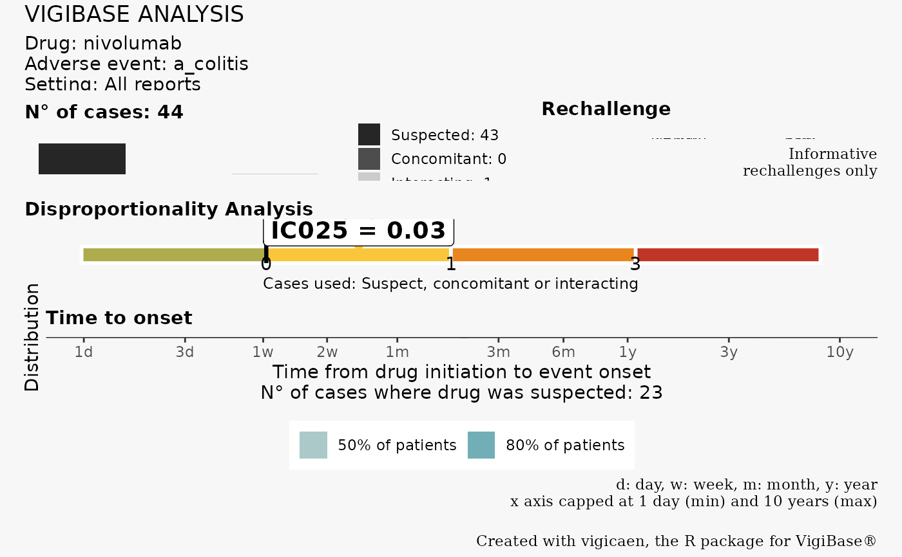

![[Experimental]](figures/lifecycle-experimental.svg)
vigi_routine() draws
an Information Component plot and
a Time to Onset plot for a given drug-adr pair.
Usage
vigi_routine(
demo_data,
drug_data,
adr_data,
link_data,
d_code,
a_code,
case_tto = NULL,
vigibase_version,
analysis_setting = "All reports",
d_label = NULL,
a_label = NULL,
export_to = NULL
)Arguments
- demo_data
A demo data.table.
- drug_data
A drug data.table.
- adr_data
An adr data.table.
- link_data
A link data.table.
- d_code
A named list. The drug code(s) to be used. There must be only one item in d_code.
- a_code
A named list. The adr code(s) to be used. There must be only one item in a_code.
- case_tto
A numeric. The time to onset of the studied case. See details.
- vigibase_version
A character. The version of VigiBase used (e.g. "September 2024"). This is passed to the plot legend.
- analysis_setting
A character. The setting of the analysis. See details.
- d_label
A character. The name of the drug, as passed to the plot legend. Defaults to names(d_code).
- a_label
A character. The name of the adr, as passed to the plot legend. Defaults to names(a_code).
- export_to
A character. The path to export the plot. If NULL, the plot is not exported. Should end by ".eps", ".ps", ".tex" (pictex), ".pdf", ".jpeg", ".tiff", ".png", ".bmp", ".svg" or ".wmf" (windows only).
Value
A ggplot2 graph, with two panels. The first panel, on top, is the Information Component (IC) plot. The arrow and "IC025 label" indicate the IC value for the selected drug-adr pair. The second panel, on the bottom, is the Time to Onset (TTO) density plot. It is derived only of cases where the drug was suspected to be responsible of the adr. If you provide a case_tto value, it is represented by the red line, and the label.
Details
See vignette("routine_pharmacovigilance") for examples.
The output can be exported. Time to onset data are bounded between
1 day and 10 years. Data outside this range are reassigned a 1 day and 10
years value, respectively.
The function only works if there is one item in d_code and a_code.
If you are working on a specific case, you can provide a case_tto value.
This value will be displayed on the Time to Onset plot.
If you're demo table was filtered on specific cases (e.g. older adults,
a subset of all drugs), then you may want to indicate this setting on the
plot legend, with arg analysis_setting.
Examples
# Say you want to perform a disproportionality analysis between colitis and
# nivolumab among ICI cases
# identify drug DrecNo, and adr LLT code
d_drecno <-
ex_$d_drecno["nivolumab"]
a_llt <-
ex_$a_llt["a_colitis"]
# But you could also use get_drecno() and get_llt_soc()
# load tables demo, drug, adr, and link
demo <- demo_
adr <- adr_
drug <- drug_
link <- link_
# run routine
vigi_routine(
demo_data = demo,
drug_data = drug,
adr_data = adr,
link_data = link,
d_code = d_drecno,
a_code = a_llt,
vigibase_version = "September 2024"
)

# if you're working on a case, you can provide his/her time to onset
# with arg `case_tto`
vigi_routine(
case_tto = 150,
demo_data = demo,
drug_data = drug,
adr_data = adr,
link_data = link,
d_code = d_drecno,
a_code = a_llt,
vigibase_version = "September 2024"
)
# Additional customization with d_name and a_name args
vigi_routine(
case_tto = 150,
demo_data = demo,
drug_data = drug,
adr_data = adr,
link_data = link,
d_code = d_drecno,
a_code = a_llt,
vigibase_version = "September 2024",
d_label = "Nivolumab",
a_label = "Colitis"
)
# You can export the plot with export_to
vigi_routine(
case_tto = 150,
demo_data = demo,
drug_data = drug,
adr_data = adr,
link_data = link,
d_code = d_drecno,
a_code = a_llt,
vigibase_version = "September 2024",
d_label = "Nivolumab",
a_label = "Colitis",
export_to = paste0(tempdir(), "/", "vigicaen_graph.png")
)
 #> Plot exported to /tmp/RtmpDAadzq/vigicaen_graph.png
#> Plot exported to /tmp/RtmpDAadzq/vigicaen_graph.png